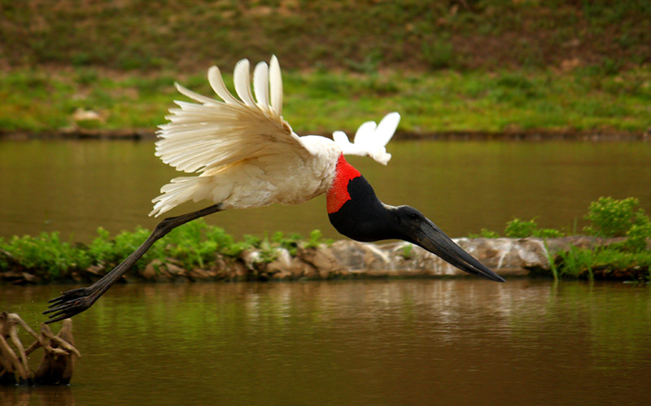
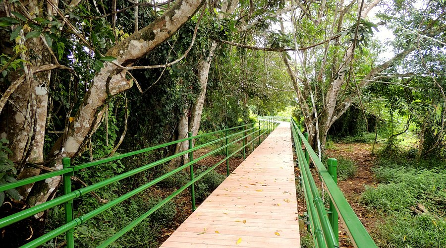
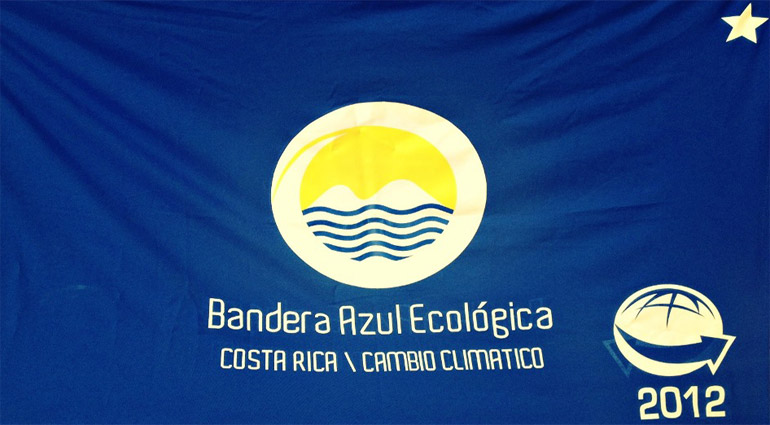
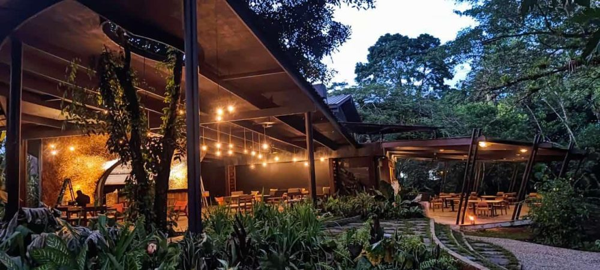

ADI Caño Negro
Naturaleza, cultura y conservación
Un destino único en el norte de Costa Rica, rodeado de biodiversidad, paisajes impresionantes y una comunidad comprometida con la protección de su riqueza natural.
Caño Negro, Los Chiles, Alajuela
El Refugio de Vida Silvestre Caño Negro es uno de los humedales más importantes de Costa Rica y Centroamérica. Su riqueza ecológica lo convierte en un lugar esencial para la protección de aves, reptiles, mamíferos y una amplia diversidad de flora.
Además de su valor ambiental, Caño Negro representa una oportunidad para el ecoturismo, la investigación y el fortalecimiento de la comunidad a través de un desarrollo vinculado con la naturaleza.
 Foto: Juan Pérez
Foto: Juan Pérez
Un destino que destaca por su biodiversidad, su importancia ecológica y el valor de su entorno natural.
Especies de aves
Compromiso con la conservación
Humedal de gran importancia ecológica
Conoce algunos de los elementos que forman parte de la identidad natural, social y cultural de Caño Negro.

NaturalezaDescubre especies emblemáticas y la riqueza biológica que distingue a la zona.
Ver más información
AventuraRecorre espacios llenos de vegetación, paisajes y conexión con el entorno.
Ver más información
SostenibilidadConoce iniciativas ambientales que fortalecen el compromiso de la comunidad.
Ver más información
ComunidadApoya iniciativas locales y conoce proyectos impulsados por la comunidad.
Ver más información